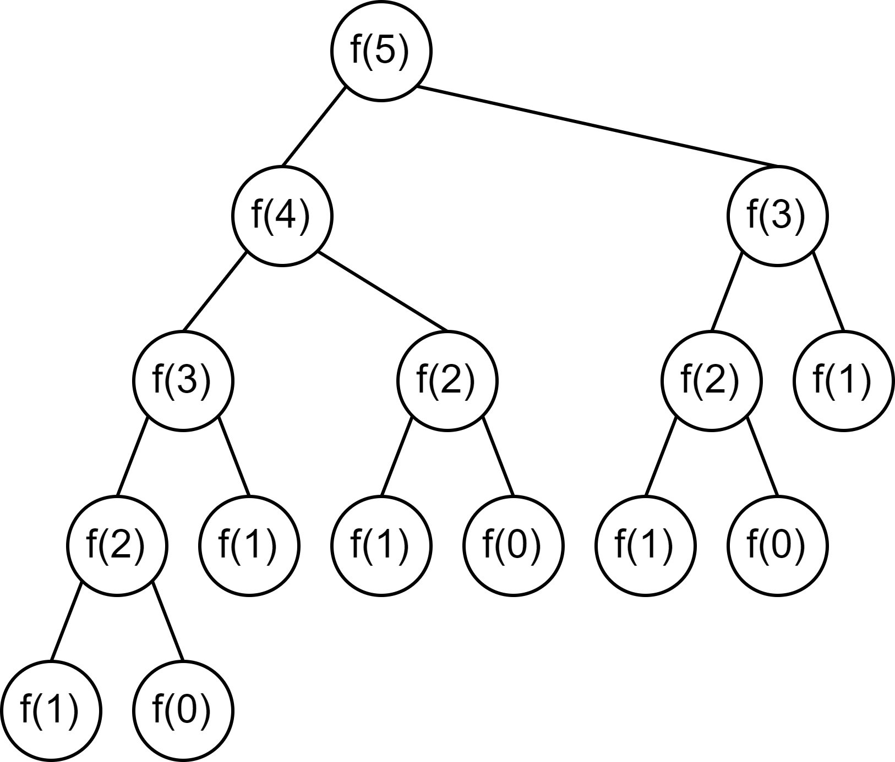
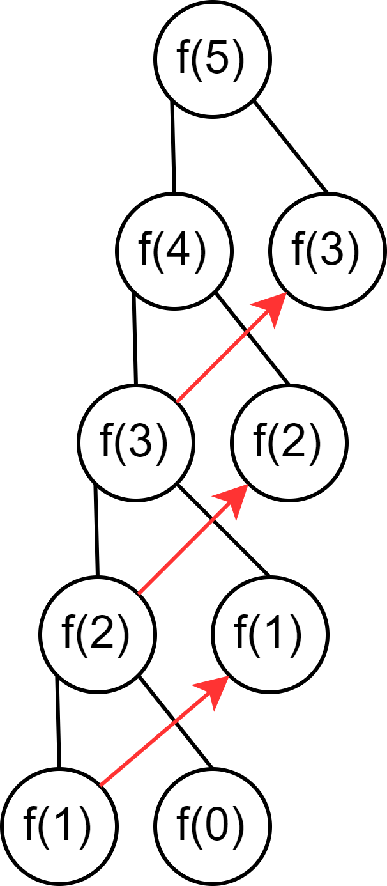

競技プログラミング講習/DP
概要
今回は、DPについて解説します。今回も、探索を高速化する方法です。状態を上手にまとめて、探索を省ける所は省いて、計算量を落としていきましょう。
重要語
DP
状態を同一視できるところをまとめ、ある問題をより小さな部分問題に分割して解く手法
必要語
今回の必要語はありません。
DP
次のような問題を考えてみます。
愚直にやってみる
まずは素直に、階段をどう上るかを探索していくことを考えます。最初の方は、998244353で割ったあまりは考えないことにします。単純なfor文などで全探索するのは難しいので、再帰関数を使って考えてみます。DFSのように、今何段目にいるかを増減させながら、探索していくことを考えると、以下のように書けます。
愚直解
COPY
#include < bits/ stdc++ .h>
using namespace std;
int now = 0 , n, ans = 0 ;
void f() {
if ( now > n) return ;
if ( now == n) {
ans++;
return ;
}
for ( int v = 1 ; v <= 2 ; v++) {
now += v;
f();
now -= v;
}
}
int main() {
cin >> n;
f();
cout << ans << endl;
return 0 ;
}
これを実行してみると、n=45ほどでもう実行時間がとても2秒では収まらなくなったと思います。かなり雑に評価すると、1回この関数が呼ばれるたびに1段上る/2段上るの2つの選択肢があり、またこの関数が呼ばれるわけですから、大体2n 回の計算が必要です。（もう少し厳密に評価すると、O(((1+√5)/2)n )です。）これでは到底間に合いません。
工夫して再帰
いきなりN段目までの移動方法を計算しようとするのは少し難しいので、この問題を分割できないか考えてみます。N段目にたどり着くためには、N-1段目から1段上がってくる、もしくは、N-2段目から2段上がってくる、この2パターンしかありません。ここで、N段目にたどり着く移動方法か何通りあるかは何がわかればよいかというと、N-1段目にたどり着く移動方法が何通りあるかと、N-2段目にたどり着く移動方法が何通りあるか、がわかればよいです。すなわち、i段目までの移動方法が何通りあるかさえ分かってしまえば、どのような経路で移動してきたかというのは無視してよいということです。また、N-1段目にたどり着く移動方法か何通りあるかは何がわかればよいかというと、N-2段目にたどり着く移動方法が何通りあるかと、N-3段目にたどり着く移動方法が何通りあるか、が分かればよいです。このように、i段目の答えは、前の2つの答えのみを使って計算することができます。ただし、このままでは前の2つ、前の2つ...と見ていく過程で終わらなくなってしまうので、何か自明な終了条件を与えます。それは、0段目にたどり着く移動方法、および1段目にたどり着く移動方法は、1通りであるということです。そのため、以下のような再帰関数で書くことができます。
まとめた解
COPY
#include < bits/ stdc++ .h>
using namespace std;
int f( int i) {
if ( i == 0 ) return 1 ;
if ( i == 1 ) return 1 ;
return f( i - 1 ) + f( i - 2 );
}
int main() {
int n;
cin >> n;
cout << f( n) << endl;
return 0 ;
}
しかし、残念ながらこの解法でも先ほどとほとんど実行時間に差がなく、n=50ほどでもう実行時間がとても2秒では収まらなくなったと思います。それは、例えば、f(5)などが計算される過程を見ると分かります。

このように、何度も何度も同じ計算を繰り返しています。例えば、これが左側から計算されていくとすると、f(5)のすぐ下のf(3)は、すでにf(4)を計算したときに計算されていますから、この値を再度利用することによりここはカットすることができます。
メモ化再帰
それでは、計算結果を再利用することを考えてみます。配列を用意し、計算するごとに結果を書き込んでいくことにして、もし計算済みであれば再帰をせずにその配列を参照するというようにします。なお、ここから998244353で割ったあまりを考えることにします。と言っても実装に大差はなく、足し算をするときに998244353で割ったあまりをとって計算しています。
メモ化再帰
COPY
#include < bits/ stdc++ .h>
using namespace std;
const int MOD = 998244353 ;
vector< int > memo;
int f( int i) {
if ( i == 0 ) return 1 ;
if ( i == 1 ) return 1 ;
int res = 0 ;
res += ( memo[ i - 1 ] == - 1 ) ? f( i - 1 ) : memo[ i - 1 ];
res += ( memo[ i - 2 ] == - 1 ) ? f( i - 2 ) : memo[ i - 2 ];
res %= MOD;
memo[ i] = res;
return res;
}
int main() {
int n;
cin >> n;
memo.resize( n + 1 , - 1 ); // 長さn+1 すべて-1で初期化
cout << f( n) << endl;
return 0 ;
}
このようにすることで、呼び出しに無駄がなくなりました。例えば、f(5)の呼び出しでは、以下の通りです。

このように、再度計算されることがなく、とても効率がよくなりました。計算量は、配列memoは高々1回しか書き換えられず、一度計算するのにかかる時間はO(1)であるので、この図からも分かるように全体としての計算量はO(N)です。よって、制約の2×105 以下には余裕をもって間に合います。
ループによる計算
under preparation
練習問題
理解できたか確認するために、練習問題があります。以下の問題を解いてみてください。